TCD6 - La télécabine du Mont Chéry
Les Gets et le secteur du Mont Chéry
Les Gets est un village de Haute-Savoie installé au col du même nom, entre la vallée du Giffre et la Dranse de Morzine. Son nom vient du patois désignant un couloir de descente du bois, matériau resté central dans l'architecture des chalets du village. La station de ski naît en 1936 avec l'ouverture de son premier téléski, et s'adresse aujourd'hui encore à une clientèle attachée au patrimoine et aux paysages traditionnels de montagne. Reliée aux Portes du Soleil, elle partage son domaine avec Morzine, à l'exception du secteur du Mont Chéry.
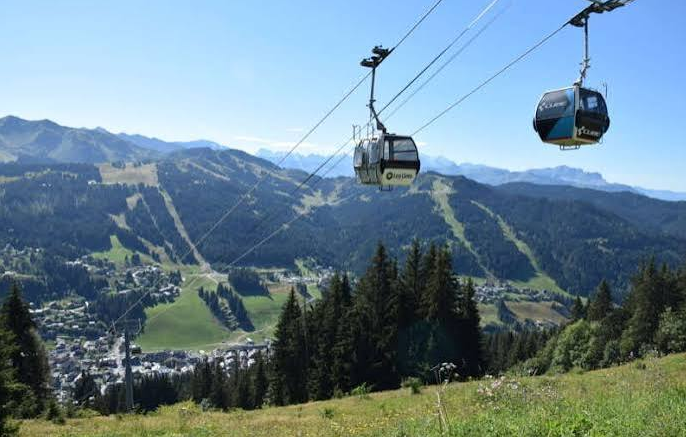
Histoire du secteur
Il n'est pas possible de dater précisément les débuts du ski sur le Mont Chéry. D'anciennes photographies laissent supposer qu'un téléski à enrouleurs biplace permettait autrefois d'accéder à la partie supérieure du domaine, avant d'être remplacé par l'actuel télésiège fixe de la Grande Ourse.
Les remontées mécaniques actuelles du secteur ont été construites entre 1963 et 1986 : le téléski de la Pointe de Chéry en 1963, celui de Super Chéry en 1968, la télécabine du Mont Chéry et le télésiège de la Grande Ourse en 1980, celui des Planeys en 1982, celui de la Pointe en 1984, et enfin celui du Chéry Nord en 1986.
La télécabine du Mont Chéry, mise en service en 1980, reste à ce jour l'unique accès au domaine du Mont Chéry depuis les Gets. Elle compte parmi les rares télécabines construites par Montaz Mautino. Elle était autrefois secondée par un télésiège fixe, démonté en 2005, qui permettait aux skieurs de rejoindre la partie supérieure du domaine en cas de panne de la télécabine.
Les cabines d'origine, surnommées localement les « œufs carrés », ont depuis été remplacées par des cabines CWA plus compactes, équipées de haut-parleurs permettant au personnel d'informer directement les usagers en cas d'incident.
Localisation géographique
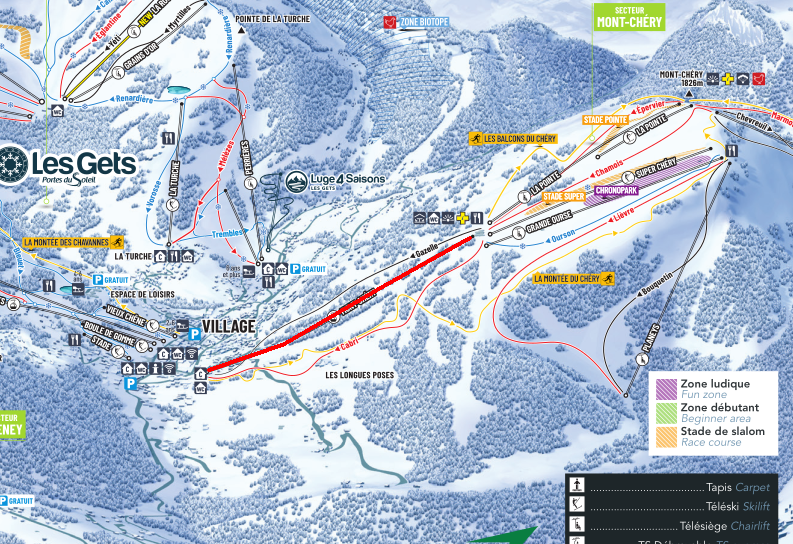
Situation
La gare aval est motrice, tandis que la tension du câble s'effectue en gare amont. L'hiver, l'appareil dessert deux pistes qui traversent chacune une route menant à des habitations : Chamois, une piste rouge, et la partie basse de Gazelle, une piste noire. L'été, la télécabine reste ouverte pour transporter randonneurs et vététistes. Le restaurant d'altitude Le Belvédère, ouvert été comme hiver, se trouve à proximité de la gare amont.
Caractéristiques
La télécabine du Mont Chéry est une télécabine à attaches débrayables 6 places, construite par Montaz Mautino et mise en service en 1980. Elle fonctionne aussi bien en hiver qu'en été, avec un débit de 1200 personnes par heure à une vitesse d'exploitation de 4 m/s, pour un temps de trajet d'environ 4 minutes et 34 secondes.
La ligne développe 1094 mètres pour un dénivelé de 374 mètres, avec une pente moyenne de 36 % et une pente maximale de 71 %. La montée s'effectue par la droite. La ligne compte 10 pylônes, et l'installation dispose de 44 cabines CWA, chacune pouvant supporter un poids maximal de 480 kg.
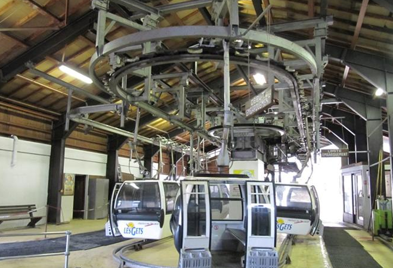
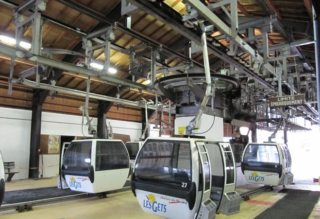
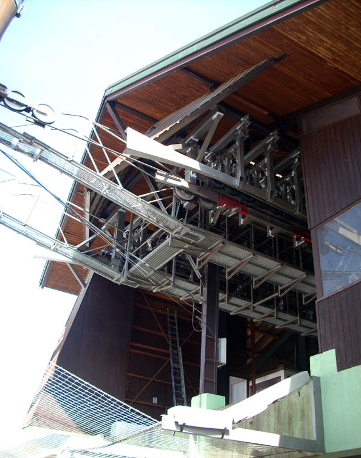
Ligne
Depuis le reportage initial, la Sagets a repeint l'ensemble des pylônes de la ligne et entrepris le remplacement progressif des balanciers d'origine Montaz Mautino, plus résistants à l'usure. Une réflexion a également été menée sur la suppression du pylône compression P5, installé à l'origine pour éviter une ligne électrique aujourd'hui enterrée, ainsi que sur le pylône P7, qui supporte peu de charge et présente un risque de déraillement du câble lors du rangement des cabines en soirée.
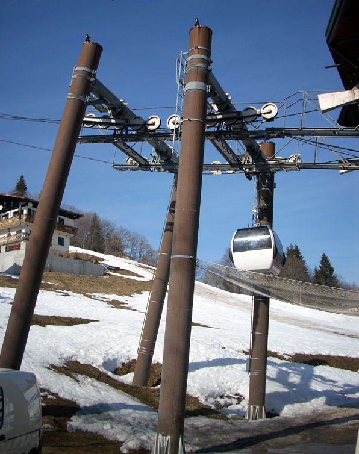
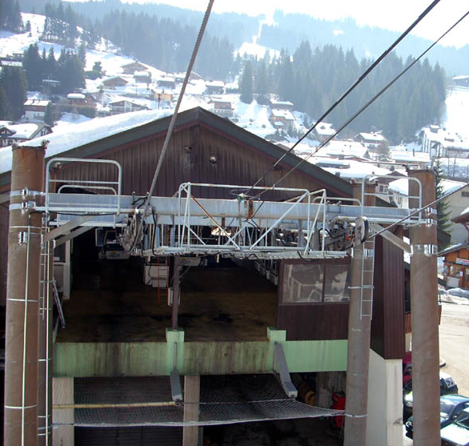
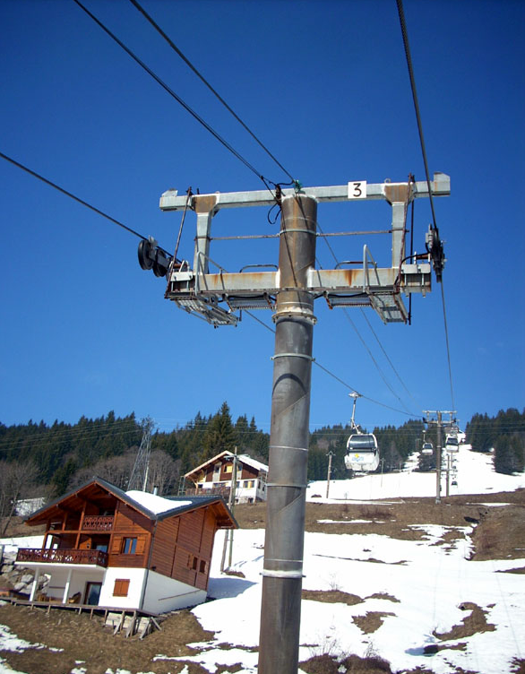
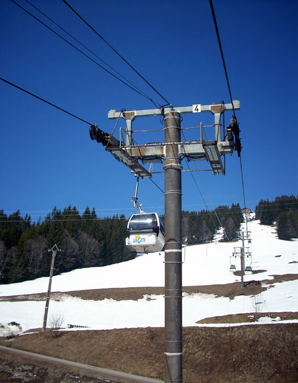
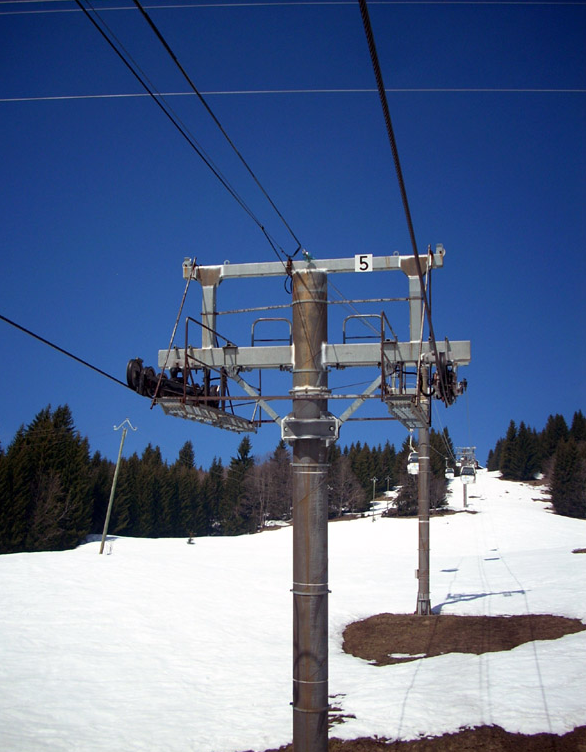
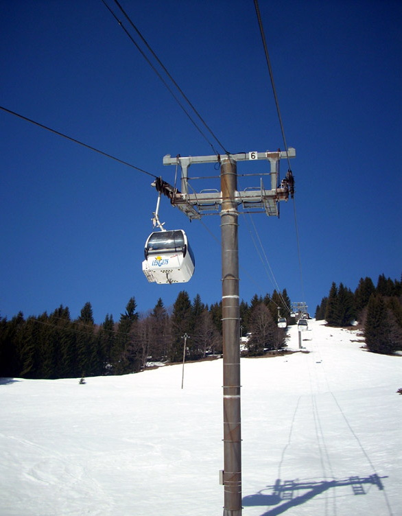
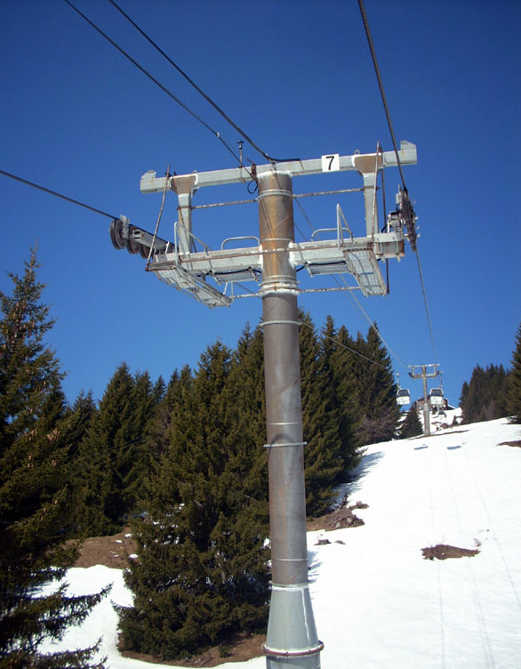
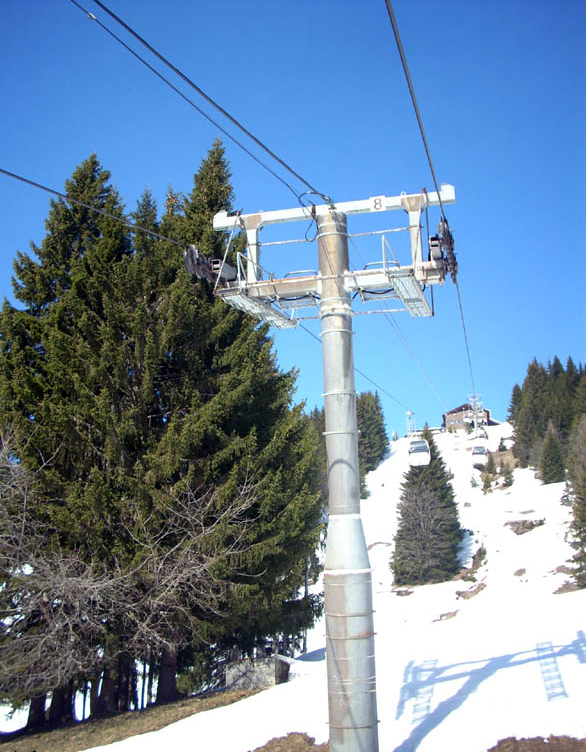
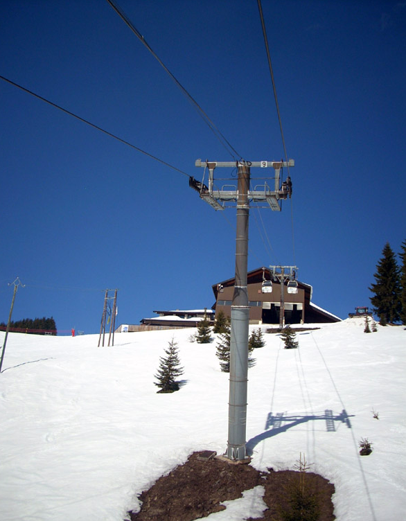
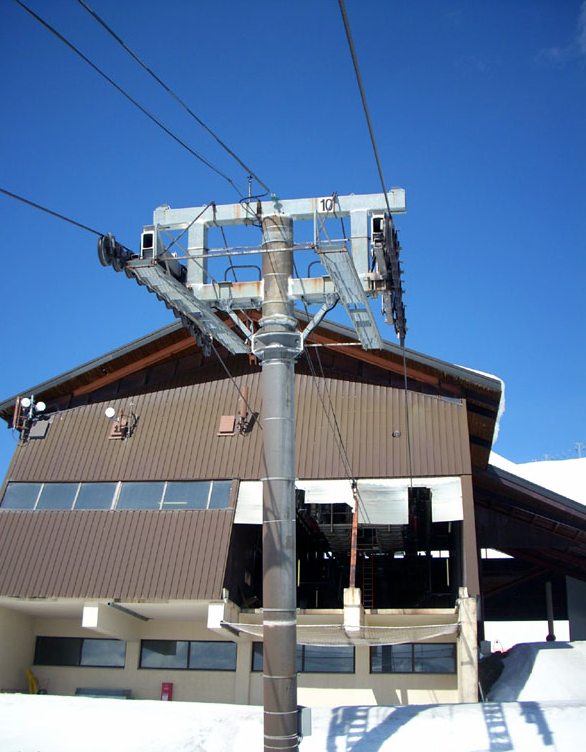
Gare amont
Contrairement à la majorité des télécabines de la station, la tension de l'appareil s'effectue en gare amont, via un système hydraulique d'origine toujours en service. Les cabines y sont rangées dans un garage dédié en fin de journée.
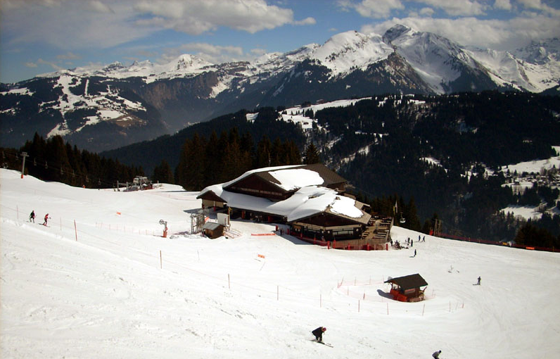
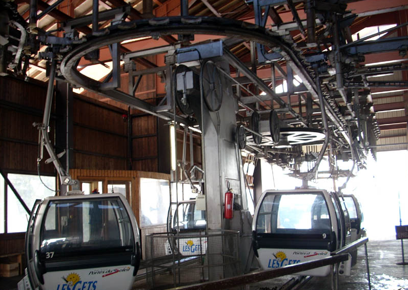
Véhicules et pinces
Les cabines CWA actuelles ont remplacé les anciennes cabines dites « œufs carrés », équipées à l'époque de panneaux solaires diffusant les informations d'exploitation ainsi que la radio locale. Le cadenceur automatique, qui régule l'espacement des cabines, a été installé dans les années 2000, en remplacement d'une gestion entièrement manuelle à l'origine.
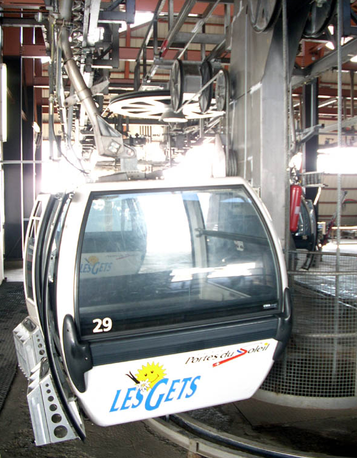
Conclusion
Plus de quarante ans après sa construction, la télécabine du Mont Chéry demeure l'unique porte d'entrée du secteur depuis les Gets. Malgré les évolutions apportées au fil des décennies (repeinte des pylônes, remplacement progressif des balanciers, cadenceur automatique), l'appareil a conservé plusieurs éléments d'origine, dont son système de tension hydraulique, témoignant de la robustesse de cette installation Montaz Mautino.